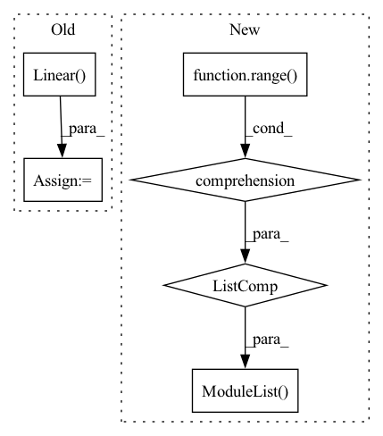

Pattern ID :30122

Before Change
self.Q = nn.Linear(self.emb_size, self.emb_size, bias=False)
self.K = nn.Linear(self.emb_size, self.emb_size, bias=False)
self.V = nn.Linear(self.emb_size, self.emb_size, bias=False)
self.W1 = nn.Linear(self.emb_size, self.emb_size)
self.W2 = nn.Linear(self.emb_size, self.emb_size)
self.dropout_layer = torch.nn.Dropout(p=self.dropout)
After Change
self.i_embeddings = nn.Embedding(self.item_num, self.emb_size)
self.p_embeddings = nn.Embedding(self.max_his + 1, self.emb_size)
self.transformer_block = nn.ModuleList([
layers.TransformerLayer(d_model=self.emb_size, d_ff=self.emb_size, n_heads=self.num_heads,
dropout=self.dropout, kq_same=False)
for _ in range(self.num_layers)
])
def forward(self, feed_dict):
self.check_list = []
i_ids = feed_dict["item_id"] // [batch_size, -1]
In pattern: SUPERPATTERN
Frequency: 3
Non-data size: 6
Instances
Fragment ID: 89286022
Project Name: thuwangcy/rechorus
Commit Name: dba1d0bd7b6d7296ed6c730793e0f61278007dc2
Time: 2020-11-08
Author: THUwangcy@gmail.com
File Name: src/models/sequential/SASRec.py
M Class Name: SASRec
N Class Name: SASRec
M Method Name: _define_params(1)
N Method Name: _define_params(1)
M Parent Class: GRU4Rec
N Parent Class: GRU4Rec
M File Name: src/models/sequential/SASRec.py
N File Name: src/models/sequential/SASRec.py
M Start Line: 28
M End Line: 35
N Start Line: 31
N End Line: 35
'>
Before Change
def __init__(self, vocab_size: int, hidden_size: int):
super().__init__()
self.embeddings = torch.nn.Embedding(num_embeddings=vocab_size, embedding_dim=hidden_size)
self.W_hh = torch.nn.Linear(in_features=hidden_size, out_features=hidden_size) // (H, H)
self.W_xh = torch.nn.Linear(in_features=hidden_size, out_features=hidden_size) // (H, H)
def forward(self, X: torch.Tensor) -> torch.Tensor:
After Change
def __init__(self, vocab_size: int, hidden_size: int, depth: int):
super().__init__()
self.embeddings = torch.nn.Embedding(num_embeddings=vocab_size, embedding_dim=hidden_size)
self.cells = torch.nn.ModuleList([RNNCell(self.embeddings, hidden_size) for _ in range(depth)])
def forward(self, x: torch.Tensor):
for cell in self.cells:
x = cell(x)
'>
Fragment ID: 89286024
Project Name: eubinecto/the-clean-rnns
Commit Name: 03c4ff81b20e2c6bb2423ca92068167deeb2fbf2
Time: 2022-04-06
Author: tlrndk123@gmail.com
File Name: cleanrnns/models.py
M Class Name: RNN
N Class Name: RNN
M Method Name: __init__(4)
N Method Name: __init__(3)
M Parent Class: torch.nn.Module
N Parent Class: torch.nn.Module
M File Name: cleanrnns/models.py
N File Name: cleanrnns/models.py
M Start Line: 11
M End Line: 12
N Start Line: 38
N End Line: 41
'>
Before Change
// fully-connected layers
self.fc_in = nn.Linear(self._in_dim, self._feat_dim)
self.fc_1 = nn.Linear(self._feat_dim, self._feat_dim)
self.fc_2 = nn.Linear(self._feat_dim, self._feat_dim)
self.fc_out = nn.Linear(self._feat_dim, self._out_dim)
// activation layer
After Change
// fully-connected layers
self.fc_in = nn.Linear(self._in_dim, self._feat_dim)
self.fc_hidden = nn.ModuleList(
[nn.Linear(self._feat_dim, self._feat_dim) for _ in range(self._num_hidden_layer)]
)
self.fc_out = nn.Linear(self._feat_dim, self._out_dim)
// activation layer
self.relu_actvn = nn.ReLU()
'>
Fragment ID: 89286025
Project Name: dvelopery0115/torch-nerf
Commit Name: 32f020ac75e07c6e37c75e2b5d01f82b1fe88d68
Time: 2022-07-09
Author: dreamy1534@kaist.ac.kr
File Name: torch_nerf/src/network/instant_ngp.py
M Class Name: InstantNGPMLP
N Class Name: InstantNGPMLP
M Method Name: __init__(5)
N Method Name: __init__(4)
M Parent Class: nn.Module
N Parent Class: nn.Module
M File Name: torch_nerf/src/network/instant_ngp.py
N File Name: torch_nerf/src/network/instant_ngp.py
M Start Line: 85
M End Line: 90
N Start Line: 72
N End Line: 95